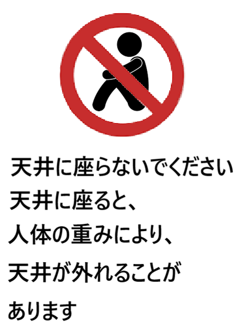
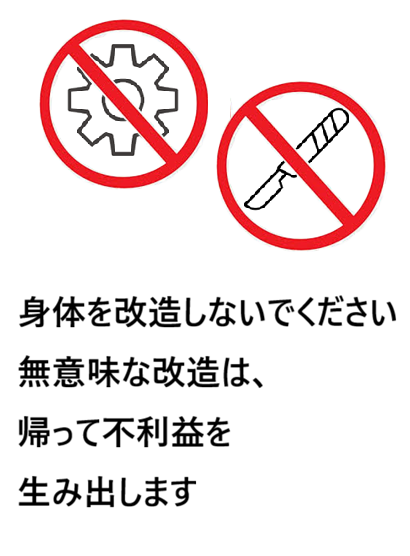

Artistic Fragments
視覚的断片

無限の連鎖と自己の拡散
自己の境界線が曖昧になり、無限に増殖していく「接続」への渇望と恐怖。
手.png

存在の無視に対する抗議
当たり前にある境界線を再認識させるための、静かなる叫び。
壁を無視しないでください.png

偽装された可能性
開かれているようでいて、決して越えることのできない情報の障壁。
開いているふりをするドア.png

偽装された絶望
閉じてるようでて、越えることの可能な情報の障壁の幻覚。
閉じてるふりをするドア.png

垂直方向への規律
重力と慣習に抗う者への、あまりにも理不尽な禁止命令。
壁を走るな.png

方向の違い
上と下、どちらが正しいのか？その問いの答えは閉ざされた。
天井に座らないでください.png

それは機械だ。
人間から逸脱しようとする人への警告。果たしてその先は...
身体を改造しなでください.png